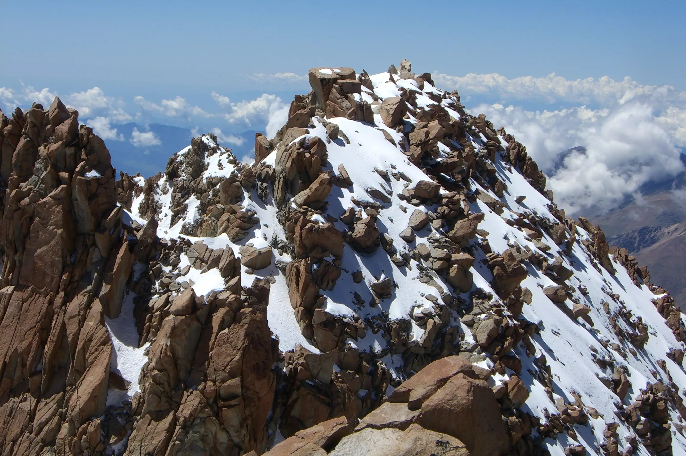
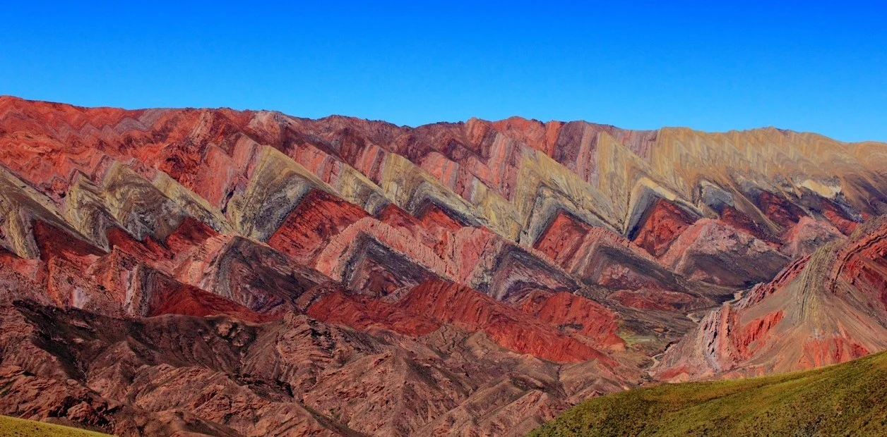

El Tuzgle es un estratovolcán ubicado en la Puna de Atacama en Argentina cuya altitud es de 5530 msnm. Se encuentra íntegramente en el departamento Susques de la provincia de Jujuy, cerca del límite con la provincia de Salta (7 km), a unos 120 km del arco volcánico principal. Se encuentra en cercanías de la localidad de Puesto Sey y de la Ruta nacional 40 (Argentina). El Tuzgle forma parte de un área o cadena volcánica llamada Calama-Olacapato-El Toro, que incluye 22 estructuras con edades comprendidas entre el Mioceno Inferior y el Pleistoceno, que incluye, entre otros, al Incahuasi, al Quevar y al Lastarria o Azufrero.
El cerro Zapaleri es un volcán extinto que pertenece a un ramal de la cordillera de los Andes cuya cumbre sur -22.813810, -67.180724 sirve de punto trifinio entre Argentina, Bolivia y Chile. Posee dos cumbres, la norte y la sur, una es el borde de un cráter en cuyo interior existe una pequeña laguna, mientras que la otra es la chimenea central que permanece erguida mientras todo a su alrededor se va desgastando debido al viento, lluvia, hielo y sol. Ambas cimas tienen exactamente la misma altura: 5607 msnm. Se ubica en el oeste de la argentina provincia de Jujuy, donde está muy cercano y prácticamente integrado con la reserva natural Vilama.
El cerro Vilama, a veces llamado «De la Laguna» en razón de situarse junto a una laguna de nombre homónimo, es una montaña limítrofe de tipo vocánica ubicada en el extremo norte de la Argentina y el sudoeste de Bolivia. El punto más alto del cerro sirve de hito limítrofe. Se encuentra al noreste del límite trifinio entre Argentina, Bolivia y Chile. Se trata de un cono volcánico nevado de 5678 msnm de edad cuaternaria, ubicado en las coordenadas 22°31′S 66°58′O; esta cumbre es una de las que constituyen el ramal volcánico de la cordillera de los Andes que se extiende desde el Cerro Branqui (4000 msnm) al noreste hasta el cerro Zapaleri (5653 msnm) al sudoeste; entre otras cimas que integran al ramal del Vilama se encuentran, de norte a sur, el cerro La Ramada (5540 msnm), el cerro Panizos (5259 msnm), Camitajo (5158 msnm), cerro Bayo (5464 msnm), cerro Negro (5026 msnm), cerro Tinte (5849 msnm), Brajma (5350 msnm).